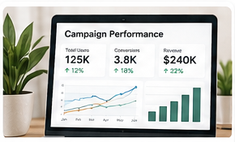
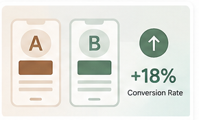
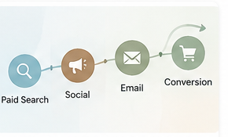
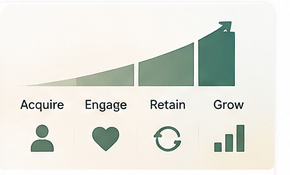

Multi-Channel Campaign Performance
Analyzed marketing spend, impressions, clicks, conversions, CAC, revenue, and ROAS across multiple channels to identify optimization opportunities.
View Case Study →I analyze customer behavior, campaign performance, and market trends to help businesses make data-driven marketing decisions.
Real-world marketing problems, solved with data.

Analyzed marketing spend, impressions, clicks, conversions, CAC, revenue, and ROAS across multiple channels to identify optimization opportunities.
View Case Study →Used behavioral and customer-value data to segment audiences and identify high-value groups for targeted marketing.
View Case Study →
Designed and analyzed A/B tests, identified funnel drop-offs, and evaluated conversion lift using statistical methods.
View Case Study →
Analyzed customer journeys across channels and compared attribution models to understand true channel contribution.
View Case Study →
Analyzed tenure, purchase behavior, churn risk, and CLV to identify retention opportunities and growth strategies.
View Case Study →Marketing Data Analyst with 4+ years of experience leveraging SQL, Tableau, Power BI, Google Analytics, customer segmentation, experimentation, attribution, and marketing performance analysis to support data-driven decision-making.
SQL, BigQuery, Azure SQL, Power BI, Tableau, Looker, Looker Studio, Excel, VBA, Pivot Tables, executive reporting.
GA4, Adobe Analytics, Google Tag Manager, conversion tracking, pixel implementation, eCommerce analytics, SEO/SEM.
Customer segmentation, A/B testing, multivariate testing, funnel analysis, CRO, cohort analysis, CLV, churn.
HubSpot, Marketo, Salesforce CRM, paid media, social media analytics, email marketing, programmatic advertising.
Multi-touch attribution, data-driven attribution, marketing mix modeling, CAC, ROAS, CTR, CPL, conversion rate.
Python, Pandas, NumPy, R, Microsoft Azure, statistical analysis, automated reporting, data-quality validation.
Open to opportunities in Marketing Analytics, Marketing Data Analytics, Customer Insights, Digital Analytics, Growth Analytics, Campaign Analytics, and Business Intelligence.